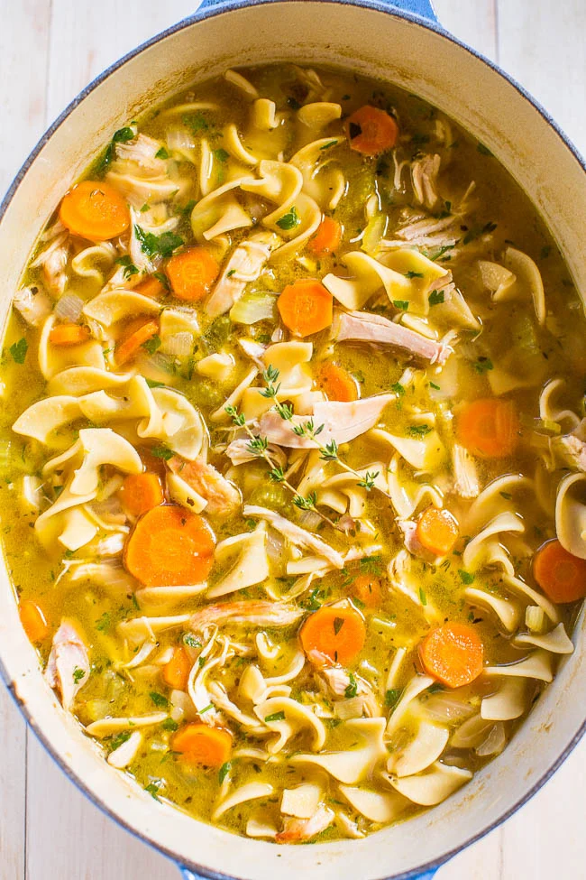

Homemade Chicken Noodle Soup

Description:
I have always loved chicken noodle soup, so when my mother
taught me how to make it myself, I was overjoyed. I have now made this recipe
a great number of times for friends and family alike. It is always a classic and a favorite.
Ingredients:
- 2 tablespoons olive oil
- 1 cup carrots, peeled and sliced thin (about 1 1/2 large carrots)
- 1 cup celery, sliced thin (about 2 stalks)
- 1 cup sweet Vidalia or yellow onion, peeled and diced small (about 1 medium onion)
- 2 garlic cloves, minced
- 64 ounces (8 cups) low-sodium chicken broth, plus more if desired
- 2 bay leaves
- 1 teaspoon fresh thyme (or 1/2 teaspoon dried thyme)
- 1/2 teaspoon dried oregano
- 1 teaspoon pepper, or to taste
- 12 ounces wide egg noodles (or your favorite noodles or pasta)
- 2 cups shredded cooked chicken (use storebought rotisserie chicken to save time; or roast or cook your own chicken in a skillet)
- 3 to 4 tablespoons fresh flat-leaf parsley leaves, finely chopped
- 1 tablespoon lemon juice, optional
- salt, to taste